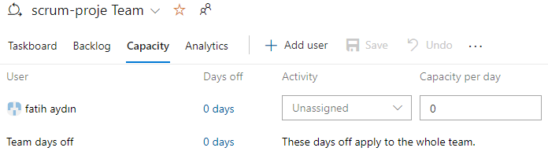

"Capacity" (Kapasite) Ayarları
"Capacity" (Kapasite) ayarları altında aşağıdaki gibi çeşitli seçenekler yer alır:
- Team members (Takım üyeleri): Bu bölümde, takımın üyelerini ve her bir üyenin kapasitesini belirleyebilirsiniz. Her üye için haftalık çalışma saatlerini, tatil günlerini ve diğer iş dışı zamanları tanımlayabilirsiniz.
- Days off (Tatil günleri): Bu seçenek, takımın tatil günlerini belirlemenizi sağlar. Tatil günleri, takımın çalışmadığı özel günler veya tatiller gibi durumları temsil eder.
- Hours per day (Günlük saatler): Bu seçenek, bir gün içindeki çalışma saatlerini belirler. Her bir takım üyesi için günlük çalışma saatlerini tanımlayabilirsiniz.
- Activity (Aktivite): Bu bölümde, takım üyelerinin farklı aktiviteler için harcayacakları zamanı belirleyebilirsiniz. Örneğin, toplantılar, eğitimler veya diğer iş dışı etkinlikler için ayrılan zamanı tanımlayabilirsiniz.
Bu ayarlar, takımın bir iterasyon boyunca ne kadar iş yapabileceğini tahmin etmek ve iş yükünü dengeli bir şekilde dağıtmak için kullanılır. Böylece, takımın gerçekçi bir plan yapmasını ve iterasyon hedeflerine ulaşmasını sağlar.
